Chapter 6: Analysis of longitudinal data
2020-12-03
1 Part 1: Summary variables
1.1 Overview of data
In this first part we’re going to use data from a nutrition study on ins (see Crowder & Hand 1990). The data consists of 16 rats divided into 3 different nutritional regimens. The response variable is the weight of the rats measured repeatedly over the course of the study. The time is measured in days.
First, let’s take a peek at the data in table format.
#Read the data in wide format
rats_wide <- read.table("./data/rats_data.txt", header = TRUE)
str(rats_wide)## 'data.frame': 16 obs. of 13 variables:
## $ ID : int 1 2 3 4 5 6 7 8 9 10 ...
## $ Group: chr "Group 1" "Group 1" "Group 1" "Group 1" ...
## $ WD1 : int 240 225 245 260 255 260 275 245 410 405 ...
## $ WD8 : int 250 230 250 255 260 265 275 255 415 420 ...
## $ WD15 : int 255 230 250 255 255 270 260 260 425 430 ...
## $ WD22 : int 260 232 255 265 270 275 270 268 428 440 ...
## $ WD29 : int 262 240 262 265 270 275 273 270 438 448 ...
## $ WD36 : int 258 240 265 268 273 277 274 265 443 460 ...
## $ WD43 : int 266 243 267 270 274 278 276 265 442 458 ...
## $ WD44 : int 266 244 267 272 273 278 271 267 446 464 ...
## $ WD50 : int 265 238 264 274 276 284 282 273 456 475 ...
## $ WD57 : int 272 247 268 273 278 279 281 274 468 484 ...
## $ WD64 : int 278 245 269 275 280 281 284 278 478 496 ...library(gtsummary)
#Print out a summary table of all variables (we can drop out the
# first variable [subject])
my_table <- tbl_summary(rats_wide[2:13],
by = Group,
digits = all_continuous() ~ 2,
type = all_continuous() ~ "continuous2",
statistic = list(all_continuous() ~ c("{N_nonmiss}",
"{mean} ({sd})",
"{median} ({p25}, {p75})",
"{min}, {max}")))
#Add some refining touches to the table and print it out
my_table %>% bold_labels()| Characteristic | Group 1, N = 8 | Group 2, N = 4 | Group 3, N = 4 |
|---|---|---|---|
| WD1 | |||
| N | 8.00 | 4.00 | 4.00 |
| Mean (SD) | 250.62 (15.22) | 453.75 (69.81) | 508.75 (27.80) |
| Median (IQR) | 250.00 (243.75, 260.00) | 427.50 (408.75, 472.50) | 515.00 (500.00, 523.75) |
| Range | 225.00, 275.00 | 405.00, 555.00 | 470.00, 535.00 |
| WD8 | |||
| N | 8.00 | 4.00 | 4.00 |
| Mean (SD) | 255.00 (13.09) | 460.00 (67.95) | 506.25 (28.39) |
| Median (IQR) | 255.00 (250.00, 261.25) | 432.50 (418.75, 473.75) | 517.50 (498.75, 525.00) |
| Range | 230.00, 275.00 | 415.00, 560.00 | 465.00, 525.00 |
| WD15 | |||
| N | 8.00 | 4.00 | 4.00 |
| Mean (SD) | 254.38 (11.48) | 467.50 (65.89) | 513.75 (26.26) |
| Median (IQR) | 255.00 (253.75, 260.00) | 440.00 (428.75, 478.75) | 525.00 (508.75, 530.00) |
| Range | 230.00, 270.00 | 425.00, 565.00 | 475.00, 530.00 |
| WD22 | |||
| N | 8.00 | 4.00 | 4.00 |
| Mean (SD) | 261.88 (13.60) | 475.00 (70.68) | 518.25 (24.54) |
| Median (IQR) | 266.50 (258.75, 270.00) | 446.00 (437.00, 484.00) | 524.00 (507.50, 534.75) |
| Range | 232.00, 275.00 | 428.00, 580.00 | 485.00, 540.00 |
| WD29 | |||
| N | 8.00 | 4.00 | 4.00 |
| Mean (SD) | 264.62 (11.06) | 482.75 (71.84) | 523.75 (25.08) |
| Median (IQR) | 267.50 (262.00, 270.75) | 451.50 (445.50, 488.75) | 532.50 (519.25, 537.00) |
| Range | 240.00, 275.00 | 438.00, 590.00 | 487.00, 543.00 |
| WD36 | |||
| N | 8.00 | 4.00 | 4.00 |
| Mean (SD) | 265.00 (11.78) | 488.75 (72.52) | 529.25 (24.40) |
| Median (IQR) | 266.50 (263.25, 273.25) | 457.50 (452.00, 494.25) | 539.00 (526.75, 541.50) |
| Range | 240.00, 277.00 | 443.00, 597.00 | 493.00, 546.00 |
| WD43 | |||
| N | 8.00 | 4.00 | 4.00 |
| Mean (SD) | 267.38 (10.95) | 486.50 (72.63) | 522.75 (20.60) |
| Median (IQR) | 268.50 (265.75, 274.50) | 454.50 (448.75, 492.25) | 530.00 (517.00, 535.75) |
| Range | 243.00, 278.00 | 442.00, 595.00 | 493.00, 538.00 |
| WD44 | |||
| N | 8.00 | 4.00 | 4.00 |
| Mean (SD) | 267.25 (10.19) | 488.75 (71.25) | 530.00 (18.40) |
| Median (IQR) | 269.00 (266.75, 272.25) | 457.00 (449.00, 496.75) | 536.00 (523.50, 542.50) |
| Range | 244.00, 278.00 | 446.00, 595.00 | 504.00, 544.00 |
| WD50 | |||
| N | 8.00 | 4.00 | 4.00 |
| Mean (SD) | 269.50 (14.56) | 501.25 (74.26) | 538.25 (21.25) |
| Median (IQR) | 273.50 (264.75, 277.50) | 468.50 (460.50, 509.25) | 546.50 (534.00, 550.75) |
| Range | 238.00, 284.00 | 456.00, 612.00 | 507.00, 553.00 |
| WD57 | |||
| N | 8.00 | 4.00 | 4.00 |
| Mean (SD) | 271.50 (10.76) | 509.00 (73.11) | 542.50 (17.02) |
| Median (IQR) | 273.50 (271.00, 278.25) | 476.00 (467.50, 517.50) | 548.50 (537.50, 553.50) |
| Range | 247.00, 281.00 | 466.00, 618.00 | 518.00, 555.00 |
| WD64 | |||
| N | 8.00 | 4.00 | 4.00 |
| Mean (SD) | 273.75 (12.44) | 518.50 (73.71) | 550.25 (18.89) |
| Median (IQR) | 278.00 (273.50, 280.25) | 487.00 (476.50, 529.00) | 553.50 (542.25, 561.50) |
| Range | 245.00, 284.00 | 472.00, 628.00 | 525.00, 569.00 |
As you can see above, the data consists of 16 rats total. Group 1 has 8 rats and groups 2 and 3 have 4 rats. Conveniently there are no missing values so we won’t have to replace them or remove rats from the analysis. However, it should be noted that not all time intervals are equivalent.
At a quick glance, the data seems quite normally distributed. It noticeable how the starting levels for the mice’s weights are quite different. Also there seems to be quite a bit of difference in the variance of weight in the different groups which is not explained by the variables difference in mean magnitude (e.g. compare groups 2 and 3).
Now, the intention of this first part is to avoid proper longitudinal modeling of the data and, instead, analyze the data using a suitable summary variable.
However, we must first get a better grip at what’s going on. Let’s do some graphical exploration of the data:
library(GGally)
library(plotly)
#Read the data in long format for easier graphing
rats_long <- read.table("./data/rats_long_data.txt", header = TRUE)
str(rats_long)## 'data.frame': 176 obs. of 4 variables:
## $ ID : int 1 1 1 1 1 1 1 1 1 1 ...
## $ Group : chr "Group 1" "Group 1" "Group 1" "Group 1" ...
## $ time : int 1 8 15 22 29 36 43 44 50 57 ...
## $ weight: int 240 250 255 260 262 258 266 266 265 272 ...#... The first two variables should be factor variables.
rats_long[1:2] <- lapply(rats_long[1:2], factor)
str(rats_long)## 'data.frame': 176 obs. of 4 variables:
## $ ID : Factor w/ 16 levels "1","2","3","4",..: 1 1 1 1 1 1 1 1 1 1 ...
## $ Group : Factor w/ 3 levels "Group 1","Group 2",..: 1 1 1 1 1 1 1 1 1 1 ...
## $ time : int 1 8 15 22 29 36 43 44 50 57 ...
## $ weight: int 240 250 255 260 262 258 266 266 265 272 ...#Let's greate a new grouped table with mean and se of weight
#for both groups at each timepoint
rats_long_grouped <- rats_long %>%
group_by(Group, time) %>%
summarise(
mean_weight = mean(weight),
mean_weight_se = sd(weight) / sqrt(length(weight)))
#At the data on an individual level (and also print the means)
my_line_plot <- ggplot(rats_long, mapping = aes(x = time, y = weight, colour = Group,group = ID)) +
geom_line(rats_long_grouped, mapping = aes(x = time, y = mean_weight, colour = Group,group = Group), alpha = 0.6, size = 2)+
geom_errorbar(rats_long_grouped, mapping = aes(x = time, y = mean_weight, colour = Group,group = Group,ymin=mean_weight-mean_weight_se, ymax=mean_weight+mean_weight_se))+
geom_line(alpha = 0.2, size = 1)
ggplotly(my_line_plot)#Let's distort the table a little bit to give better spacing for the box plot
rats_long2 <- rats_long
rats_long2$time[rats_long2$time == 44] <- 45
rats_long2$time[rats_long2$time == 43] <- 42
#Box plot. Don't really need this, but printing it just because it was instructed...
my_box_plot <- ggplot(rats_long2, mapping = aes(x = time, y = weight, colour = Group,group = Group)) +
geom_boxplot(size = 1, width=0.5, position=position_dodge2(width =5,padding = 0,preserve = "single")) +
stat_summary(fun=mean, geom="point", shape=23, size=2, position=position_dodge2(width =2.1,padding = 0))
layout(ggplotly(my_box_plot),boxmode = "group")#Print out the graph with standardized (by timepoint) weights.
#These are very little use to us after the first two graphs.
rats_long <- rats_long %>%
group_by(time) %>%
mutate(scaled_weight = scale(weight)) %>%
ungroup()
ggplotly(ggplot(rats_long, aes(x = time, y = scaled_weight, group = ID, color = Group)) +
geom_line() +
ylab("Scaled weight"))From the graphs we could hypothesize that one particular rat (ID = 12) in group 2 may even have switched groups or is simply an aberrant observation (if not ourlier) in it’s intercept weight. Infact, it very much seems that groups 2 and 3 are actually part of the one and same group. Judging wether this sinqular observation in a group of 4 observations is an outlier is quite unreliable, so we’ll let it be. Also, ID = 2 that is shown as an outlier in the boxplots, should not be considered an outlier with such a low n. This is especially true when considering that this observation is contained well within the 3*IQR limits.
Ultimately, what we should analyze in the data depends entirely on what our research question is. The instructions for this chapter leave this quite unclear and upto interpretation. Keeping with the theme of Chapter 8 in MABS, let’s assume we’d be interested in overall mean weight of the rats over the whole study period. As a secondary outcome measure let’s also consider the mean weight after eliminating the effect of the baseline weight (just like in MABS Chapter 8).
There’s one cruacial difference in the RATS and BPRS data that we should consider while implementing the MABS Chapter 8 analysis: our RATS data does not have equal time intervals. Therefore, comparing the overall group means is not applicable here. Instead, we should compare the mean AUC of the weight for each group.
1.2 AUC comparison of groups
#Let's use the rats_wide table for calculating AUC
#for each individual rat
rats_wide <- read.table("./data/rats_data.txt", header = TRUE)
num_of_rats <- nrow(rats_wide)
num_of_timepoints <- ncol(rats_wide)-2
column_names <- colnames(rats_wide)
rat_auc_weights <- c()
#A simple loop for calculating AUC for each rat
for (i in 1:num_of_rats) {
rat_auc <- 0
for (n in 1:(num_of_timepoints - 1)) {
time_interval <- (substring(column_names[n + 3], 3, 4) %>% as.numeric) -
(substring(column_names[n + 2], 3, 4) %>% as.numeric)
rat_auc <- rat_auc + ((rats_wide[i,n + 2] + rats_wide[i,n + 3]) / 2) * time_interval
}
rat_auc_weights <- append(rat_auc_weights,rat_auc)
}
#Store the AUC values in the wide table
rats_wide2 <- rats_wide
rats_wide2$weight_auc <- rat_auc_weights
#Graph the AUC values:
my_box_plot <- ggplot(rats_wide2, mapping = aes(x = Group, y = weight_auc, colour = Group)) +
geom_boxplot(size = 1, width = 0.5) +
stat_summary(fun.y=mean, geom="point", shape=23, size=4, color="red", fill="red")
ggplotly(my_box_plot)From the box plot we can see that in group 1 the outlier is now more than 3*IQR from the median. However, as stated before, given the extremely small sample size one should be weary of excluding ourliers. So we’ll leave it be. Also, groups 2 and 3 show somewhat skewed distributions. We’ll also ignore this in running the anova.
Similarly, we’ll not cover the assumptions of ANOVA, as this has not been covered in this course, so we’ll just conveniently ingnore them…
#Run anova to see if there's a statistically significant difference in the mean AUC
#of weight for the groups
my_anova <- aov(weight_auc~Group, data = rats_wide2)
summary(my_anova)## Df Sum Sq Mean Sq F value Pr(>F)
## Group 2 936886977 468443488 87.61 2.85e-08 ***
## Residuals 13 69510538 5346964
## ---
## Signif. codes: 0 '***' 0.001 '**' 0.01 '*' 0.05 '.' 0.1 ' ' 1#There's is a significant difference in mean_auc for the groups.
#Let's see which ones, specifically, with Tukey Honest Significant differences
TukeyHSD(my_anova)## Tukey multiple comparisons of means
## 95% family-wise confidence level
##
## Fit: aov(formula = weight_auc ~ Group, data = rats_wide2)
##
## $Group
## diff lwr upr p adj
## Group 2-Group 1 13900.06 10161.152 17638.973 0.0000006
## Group 3-Group 1 16488.81 12749.902 20227.723 0.0000001
## Group 3-Group 2 2588.75 -1728.572 6906.072 0.2872152So, yes, there’s a quite significant difference in mean AUC of weight between the groups. Specifically between groups 1 and 2 (p<0.001) and 1 and 3 (p<0.001) but not 2 and 3 (p=0.29).
We can see how much the starting weight had influence in this outcome by simply substracting baseline weight auc (over whole study period) from the “weight_auc”. This is cheating a little bit, perhaps, but the outcome is the same as running a regression model and including the basline weight as a covariate as was done in the Data camp exercise.
rats_wide3 <- rats_wide2
follow_up_period <- 64 - 1
rats_wide3$baseline_auc <- rats_wide3[,3] * follow_up_period
rats_wide3$auc_minus_baseline <- rats_wide3$weight_auc - rats_wide3$baseline_auc
str(rats_wide3)## 'data.frame': 16 obs. of 16 variables:
## $ ID : int 1 2 3 4 5 6 7 8 9 10 ...
## $ Group : chr "Group 1" "Group 1" "Group 1" "Group 1" ...
## $ WD1 : int 240 225 245 260 255 260 275 245 410 405 ...
## $ WD8 : int 250 230 250 255 260 265 275 255 415 420 ...
## $ WD15 : int 255 230 250 255 255 270 260 260 425 430 ...
## $ WD22 : int 260 232 255 265 270 275 270 268 428 440 ...
## $ WD29 : int 262 240 262 265 270 275 273 270 438 448 ...
## $ WD36 : int 258 240 265 268 273 277 274 265 443 460 ...
## $ WD43 : int 266 243 267 270 274 278 276 265 442 458 ...
## $ WD44 : int 266 244 267 272 273 278 271 267 446 464 ...
## $ WD50 : int 265 238 264 274 276 284 282 273 456 475 ...
## $ WD57 : int 272 247 268 273 278 279 281 274 468 484 ...
## $ WD64 : int 278 245 269 275 280 281 284 278 478 496 ...
## $ weight_auc : num 16430 14951 16368 16753 16960 ...
## $ baseline_auc : num 15120 14175 15435 16380 16065 ...
## $ auc_minus_baseline: num 1310 776 932 372 895 ...#Run anova to see if there's a statistically significant difference in the AUC
#of weight for the groups after eliminating the effect of baseline
my_anova <- aov(auc_minus_baseline~Group, data = rats_wide3)
summary(my_anova)## Df Sum Sq Mean Sq F value Pr(>F)
## Group 2 3304861 1652430 3.839 0.049 *
## Residuals 13 5595856 430450
## ---
## Signif. codes: 0 '***' 0.001 '**' 0.01 '*' 0.05 '.' 0.1 ' ' 1#There's is a significant difference between the groups, again.
#Let's see which ones, specifically, with Tukey Honest Significant differences
TukeyHSD(my_anova)## Tukey multiple comparisons of means
## 95% family-wise confidence level
##
## Fit: aov(formula = auc_minus_baseline ~ Group, data = rats_wide3)
##
## $Group
## diff lwr upr p adj
## Group 2-Group 1 1103.1875 42.33974 2164.0353 0.0412912
## Group 3-Group 1 226.9375 -833.91026 1287.7853 0.8407725
## Group 3-Group 2 -876.2500 -2101.21148 348.7115 0.1811063Somewhat surprisingly there seems to be a statistically significant difference in the mean weights for groups 1 and 2 after adjusting for the baseline weight. It seems that the added mean weight, over the whole study period, is 1103 gramdays higher for the group 2 than group 1 (95% CI: 42.34 - 2164, p = 0.04). Ex post facto*, evidence of this result could already be seen in the initial standardized graph.
This result would suggest that we should perhaps take a closer look at the growth rates in the data. For this purpose a LMM is the best choice.
1.2.1 An extension of the Datacamp exercises
Let’s run a quick LMM on RATS like we originally should have done if we really were analyzing this data. Also, unlike in the Datacamp exercises let’s also do F-tests for the fixed-effects via Kenward-Roger approximation so we get some usable results, as well. (As before, we’ll skip the evaluation of model assumptions.)
library(lme4)
library(pbkrtest)
library(lmerTest)
str(rats_long)## tibble [176 x 5] (S3: tbl_df/tbl/data.frame)
## $ ID : Factor w/ 16 levels "1","2","3","4",..: 1 1 1 1 1 1 1 1 1 1 ...
## $ Group : Factor w/ 3 levels "Group 1","Group 2",..: 1 1 1 1 1 1 1 1 1 1 ...
## $ time : int [1:176] 1 8 15 22 29 36 43 44 50 57 ...
## $ weight : int [1:176] 240 250 255 260 262 258 266 266 265 272 ...
## $ scaled_weight: num [1:176, 1] -1.001 -0.962 -0.922 -0.938 -0.946 ...#Build the LMM model. For Kenward-Roger approximation we want REML for parameter estimation
my_lmm <- lmer(weight ~ time + Group + time * Group +(time | ID), data = rats_long, REML = TRUE)
anova(my_lmm, type = 2, ddf = "Kenward-Roger")## Type II Analysis of Variance Table with Kenward-Roger's method
## Sum Sq Mean Sq NumDF DenDF F value Pr(>F)
## time 1630.93 1630.93 1 13 82.5944 5.392e-07 ***
## Group 3027.99 1513.99 2 13 76.6724 6.369e-08 ***
## time:Group 299.14 149.57 2 13 7.5745 0.006594 **
## ---
## Signif. codes: 0 '***' 0.001 '**' 0.01 '*' 0.05 '.' 0.1 ' ' 1Now, we can see that there’s a clear difference in mean weight for the groups (p<0.001), in the weight over time (p<0.001), as well as, a difference in the slopes of weight over time between the groups (p = 0.006). Now, we may wish to inspect the effect slices, to acertain for which groups the slopes are different:
#We need an additional library for estimating least-squares means
library(emmeans)
library(dplyr)
#Let's visualize the mean slopes of weight for each group
time_points <- pull(unique(rats_long[3]),time)
emmip(my_lmm, Group ~ time, at = list(time = time_points))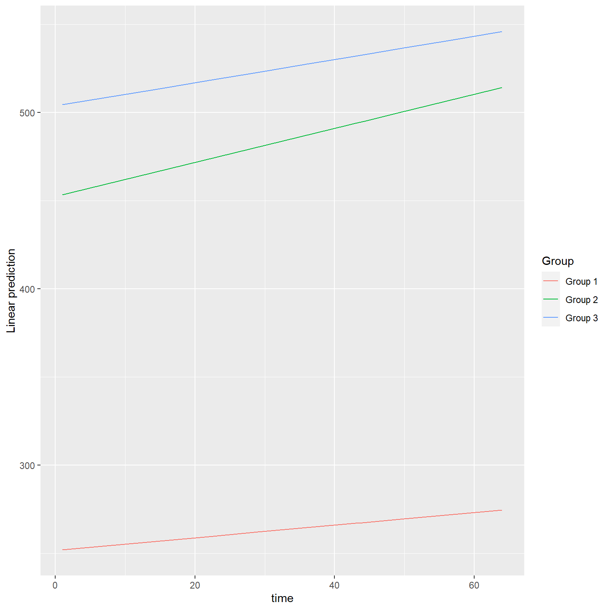
#Finally, do a pairwise comparison of the interaction slopes
#(or effect slices, as they're termed in SAS)
emtrends(my_lmm, pairwise ~ Group, var = "time")## $emtrends
## Group time.trend SE df lower.CL upper.CL
## Group 1 0.360 0.0911 13 0.163 0.557
## Group 2 0.965 0.1289 13 0.687 1.244
## Group 3 0.658 0.1289 13 0.380 0.936
##
## Degrees-of-freedom method: kenward-roger
## Confidence level used: 0.95
##
## $contrasts
## contrast estimate SE df t.ratio p.value
## Group 1 - Group 2 -0.606 0.158 13 -3.838 0.0054
## Group 1 - Group 3 -0.298 0.158 13 -1.890 0.1808
## Group 2 - Group 3 0.308 0.182 13 1.687 0.2469
##
## Degrees-of-freedom method: kenward-roger
## P value adjustment: tukey method for comparing a family of 3 estimates1.2.2 LMM slope interpretation
As can be seen from above, the analysis of the effect slices (or comparison of group-wise slopes of weight) shows that, in absolute terms, Group 2 gained more in mean weight over the study period as compared to group 1 (p=0.005). The difference was non-significant between the other group combinations.
Now, compared to the AUC analysis, the interpretation of this result is quite different. Now we can say that group 2 gained more weight over the study period whereas in the AUC analysis we could only say that the mean weight change beyond baseline was more positive over all timepoints during the study. In light of the AUC it would’ve been even possible that group 2 finished the study with a lower weight than group 1 if the mean weigh was greater over other timepoints.
All in all, the LMM was quite a bit more eloquent and protected us from issues with multiplicity.
2 Part 2: LMM of BPRS data
The chapter 9 of MABS covers LMM analysis for data with normal response variables. As I have some passing experience with hierachical LMM already through my adventures in biostatistics, I’ll perform the LMM as I’d do from previous experience. You can evaluate the results as compared to what’s contained in the chapter 9 of MABS.
The relevant assumptions of LMM are as follows: Statistical assumption | Method used to verify/analyze — | ————- The chosen model is appropriate for the studied effect (i.e. linear) | Visual inspection of model residuals plotted against within subject factors The residuals of the model are normally distributed | Visual inspection of the Q-Q plots of the residuals The variance of residuals is homogeneous vs fitted value | Visual inspenction of pearson residual vs fitted value No significant outliers/influential observations | Cook’s distance, DFBeta S, Restricted maximum likelihood distance etc. Random effects are normally distributed | None; a theoretical assumption.
2.1 Overview of data
#Read the data in wide format
bprs_wide <- read.table("./data/bprs_data.txt", header = TRUE)
str(bprs_wide)## 'data.frame': 40 obs. of 11 variables:
## $ treatment: chr "Treatment 1" "Treatment 1" "Treatment 1" "Treatment 1" ...
## $ subject : int 1 2 3 4 5 6 7 8 9 10 ...
## $ week0 : int 42 58 54 55 72 48 71 30 41 57 ...
## $ week1 : int 36 68 55 77 75 43 61 36 43 51 ...
## $ week2 : int 36 61 41 49 72 41 47 38 39 51 ...
## $ week3 : int 43 55 38 54 65 38 30 38 35 55 ...
## $ week4 : int 41 43 43 56 50 36 27 31 28 53 ...
## $ week5 : int 40 34 28 50 39 29 40 26 22 43 ...
## $ week6 : int 38 28 29 47 32 33 30 26 20 43 ...
## $ week7 : int 47 28 25 42 38 27 31 25 23 39 ...
## $ week8 : int 51 28 24 46 32 25 31 24 21 32 ...#Print out a summary table of all variables (we can drop out the
# first variable [subject])
my_table <- tbl_summary(bprs_wide[c(1,3:11)],
by = treatment,
digits = all_continuous() ~ 2,
type = all_continuous() ~ "continuous2",
statistic = list(all_continuous() ~ c("{N_nonmiss}",
"{mean} ({sd})",
"{median} ({p25}, {p75})",
"{min}, {max}")))
#Add some refining touches to the table and print it out
my_table %>% bold_labels()| Characteristic | Treatment 1, N = 20 | Treatment 2, N = 20 |
|---|---|---|
| week0 | ||
| N | 20.00 | 20.00 |
| Mean (SD) | 47.00 (13.60) | 49.00 (14.92) |
| Median (IQR) | 43.50 (38.00, 55.50) | 49.50 (37.75, 62.25) |
| Range | 24.00, 72.00 | 28.00, 78.00 |
| week1 | ||
| N | 20.00 | 20.00 |
| Mean (SD) | 46.80 (15.52) | 45.85 (17.50) |
| Median (IQR) | 40.50 (35.00, 56.50) | 41.00 (35.25, 52.50) |
| Range | 28.00, 77.00 | 23.00, 95.00 |
| week2 | ||
| N | 20.00 | 20.00 |
| Mean (SD) | 43.55 (12.01) | 39.85 (13.06) |
| Median (IQR) | 41.00 (36.00, 49.00) | 35.50 (31.00, 43.75) |
| Range | 27.00, 72.00 | 26.00, 75.00 |
| week3 | ||
| N | 20.00 | 20.00 |
| Mean (SD) | 40.90 (11.23) | 37.40 (13.62) |
| Median (IQR) | 38.00 (33.25, 50.25) | 33.00 (27.75, 39.50) |
| Range | 25.00, 65.00 | 24.00, 76.00 |
| week4 | ||
| N | 20.00 | 20.00 |
| Mean (SD) | 36.60 (9.78) | 36.10 (12.32) |
| Median (IQR) | 36.00 (28.75, 43.00) | 32.50 (27.25, 43.00) |
| Range | 25.00, 56.00 | 20.00, 66.00 |
| week5 | ||
| N | 20.00 | 20.00 |
| Mean (SD) | 32.70 (7.79) | 32.40 (10.72) |
| Median (IQR) | 31.50 (27.00, 39.25) | 30.00 (25.75, 37.25) |
| Range | 21.00, 50.00 | 20.00, 64.00 |
| week6 | ||
| N | 20.00 | 20.00 |
| Mean (SD) | 29.70 (7.67) | 32.75 (12.22) |
| Median (IQR) | 28.50 (24.25, 34.00) | 30.00 (22.75, 38.00) |
| Range | 20.00, 47.00 | 19.00, 64.00 |
| week7 | ||
| N | 20.00 | 20.00 |
| Mean (SD) | 29.80 (7.65) | 34.60 (14.14) |
| Median (IQR) | 27.50 (25.00, 36.00) | 30.50 (22.75, 42.25) |
| Range | 19.00, 47.00 | 18.00, 62.00 |
| week8 | ||
| N | 20.00 | 20.00 |
| Mean (SD) | 29.30 (8.27) | 33.55 (15.20) |
| Median (IQR) | 27.50 (23.50, 32.00) | 29.00 (22.75, 37.50) |
| Range | 20.00, 51.00 | 20.00, 75.00 |
As can be seen from the table, the data consists of 40 subjects divided evenly into two separate treatment groups. The response variable is the subjects score of Brief Psychiatric Rating Scale (BPRS) at baseline and exactly 1 week intervals thereafter for a total of 8 weeks (9 follow ups in total). The research question is: did the BPRS scores or their change (=slope) differ for the treatment 1 and 2 groups over the study period.
As can be seen from the above table, there are no missing data. This would not have been an issue either way since LMM is able to deal with missing observations on a case-by-case basis. The data is relatively normally distributed, although there seems to be some extreme observations based on the range of variables. Let’s explore the data more with the aid of some graphs.
2.1.1 Graphical overview
#Read the data in long format for easier graphing
bprs_long <- read.table("./data/bprs_long_data.txt", header = TRUE)
#... The first two variables should be factor variables.
bprs_long[1:2] <- lapply(bprs_long[1:2], factor)
str(bprs_long)## 'data.frame': 360 obs. of 4 variables:
## $ treatment: Factor w/ 2 levels "Treatment 1",..: 1 1 1 1 1 1 1 1 1 1 ...
## $ subject : Factor w/ 40 levels "1","2","3","4",..: 1 1 1 1 1 1 1 1 1 2 ...
## $ week : int 0 1 2 3 4 5 6 7 8 0 ...
## $ bprs : int 42 36 36 43 41 40 38 47 51 58 ...#Let's greate a new grouped table with mean and se of weight
#for both groups at each timepoint
bprs_long_grouped <- bprs_long %>%
group_by(treatment, week) %>%
summarise(
mean_bprs = mean(bprs),
mean_bprs_CI = 1.96 * sd(bprs) / sqrt(length(bprs)))
#At the data on an individual level (and also print the means)
my_line_plot <- ggplot(bprs_long, mapping = aes(x = week, y = bprs, colour = treatment,group = subject)) +
geom_line(bprs_long_grouped, mapping = aes(x = week, y = mean_bprs, colour = treatment,group = treatment), alpha = 0.6, size = 2)+
geom_errorbar(bprs_long_grouped, mapping = aes(x = week, y = mean_bprs, colour = treatment,group = treatment,ymin=mean_bprs-mean_bprs_CI, ymax=mean_bprs+mean_bprs_CI))+
geom_line(alpha = 0.2, size = 1)
ggplotly(my_line_plot)#Box plot. Don't really need this, but printing it just because it was instructed...
my_box_plot <- ggplot(bprs_long, mapping = aes(x = week, y = bprs, colour = treatment)) +
geom_boxplot(size = 1, width=0.5, alpha = 0.3,position=position_dodge2(width = 0.1,padding = 0.2)) +
stat_summary(fun=mean, geom="point", shape=23, size=2, mapping = aes(group = treatment),position=position_dodge2(width = 0.7,padding = 0.1))
layout(ggplotly(my_box_plot),boxmode = "group")#Print out the graph with standardized (by timepoint) bprs.
#These are very little use to us after the first two graphs.
bprs_long <- bprs_long %>%
group_by(week) %>%
mutate(scaled_bprs = scale(bprs)) %>%
ungroup()
ggplotly(ggplot(bprs_long, aes(x = week, y = scaled_bprs, group = subject, color = treatment)) +
geom_line() +
ylab("Scaled bprs"))2.1.2 Interpretation
As before, there’s clear tracking visible in the data. The boxplots also seemingly confirm our observation of relatively normally distributed variables. It should be noted, however, that LMM assumes normality of model residuals – not necessarily normality of the dependent variable or, indeed, continuous independent variables.
An important fact to realize is that we have no good way of testing any of the model assumptions a priori. Rather, we’ll fit the model and use the diagnostic plots later to assess whether the assumptions are satisfied.
There are some slight ourlier in both groups based on the box-and-whisker -plots (especially subject = 31). Also, subject #28 has a peculiar rise in his/her BPRS score towards the end of the study. However, there are no extreme outliers on individual axes (>3*IQR) so we’ll leave these outliers be for now. Later we’ll do influence diagnostics and deal with any overtly influential observations if necessary.
Judging by the graphs, there’s likely no significant differences between the groups. Overall there’s an apparent decending trend for BPRS in both groups.
Ok, with this, we can dive right into LMM:
2.2 Linear Mixed Modeling of BPRS data
#Build the LMM model. For Kenward-Roger approximation we want REML
my_lmm <- lmer(bprs ~ week + treatment + week * treatment + (week | subject), data = bprs_long, REML = TRUE)
#Let's print out some diagnostic plots
#Plots of model residuals vs independent variables
plot(resid(my_lmm),bprs_long$treatment)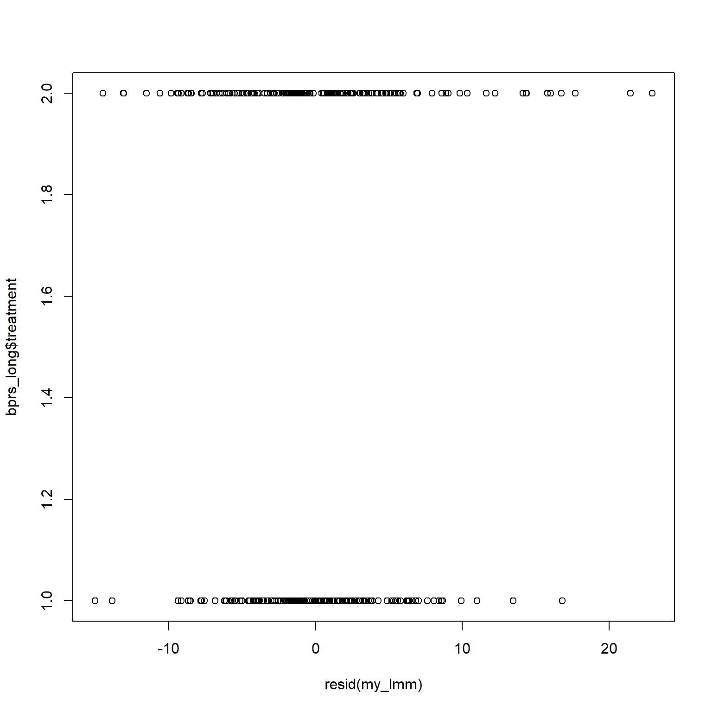
plot(resid(my_lmm),bprs_long$week)
#Pearson residuals vs fitted
plot(my_lmm)
#Q-Q-plot of residuals
qqnorm(resid(my_lmm))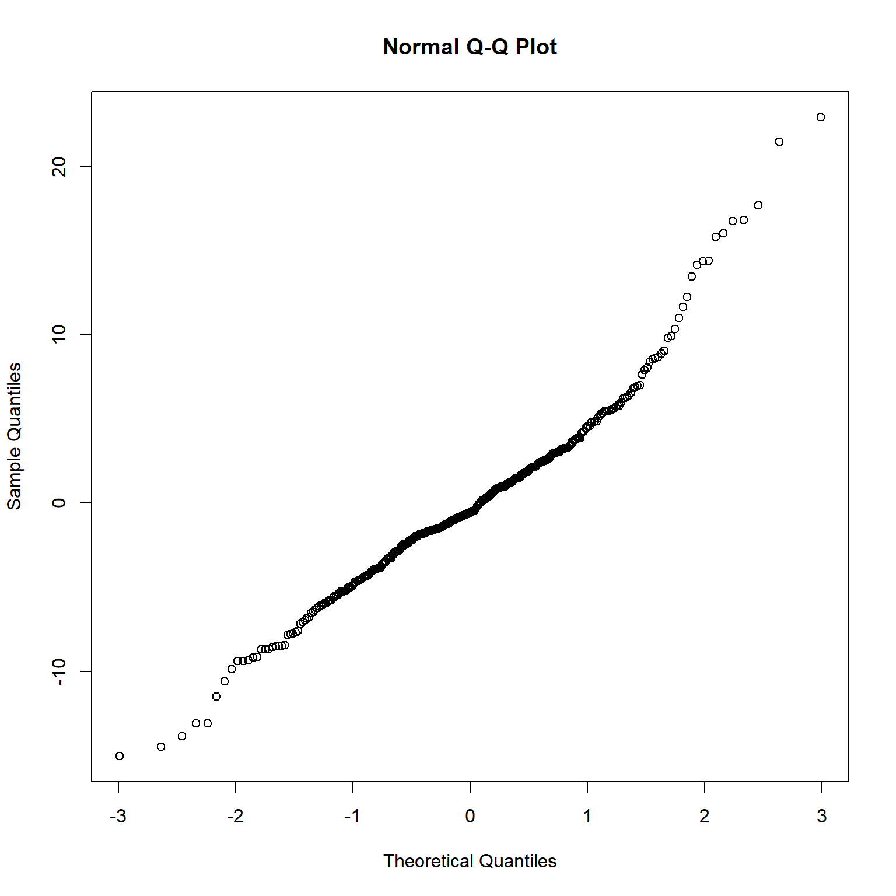 ***
So, our model residuals for the treatment levels seem rather random. However, it should be noted that this graph is mostly superfluous in this instance: treatment has only 2 levels and a “straight line” can alway be drawn through two points.
The second residual vs week graph shows evidence of a non-linear relationship between week and bprs score. There’s no gross violation of this assumption, however, so we’ll continue with our analysis without any transformations.
The Pearson residual -graph is fairly homoscedastic, although there’s slight fanning to the right. Still, we’ll make do with this mild heteroscedasticity.
The Q-Q-plot shows very good normal distribution of the model residuals.
Next, let’s continue with the influence diagnostics:
#Print influence diagnostics
library(influence.ME)
my_infl_diag <- influence(my_lmm,group ="subject")
#Dfbetas cut-off for influencial observation is +-2/sqrt(n)
dfbetas_cutoff <- 2 / sqrt(nrow(bprs_wide))
#We'll use the "4/n" -rule as a visual cutoff for Cook's distance:
cooks_d_cutoff <- 4 / nrow(bprs_wide)
#Produce the influence plots
plot(my_infl_diag, which = "cook", cutoff = cooks_d_cutoff)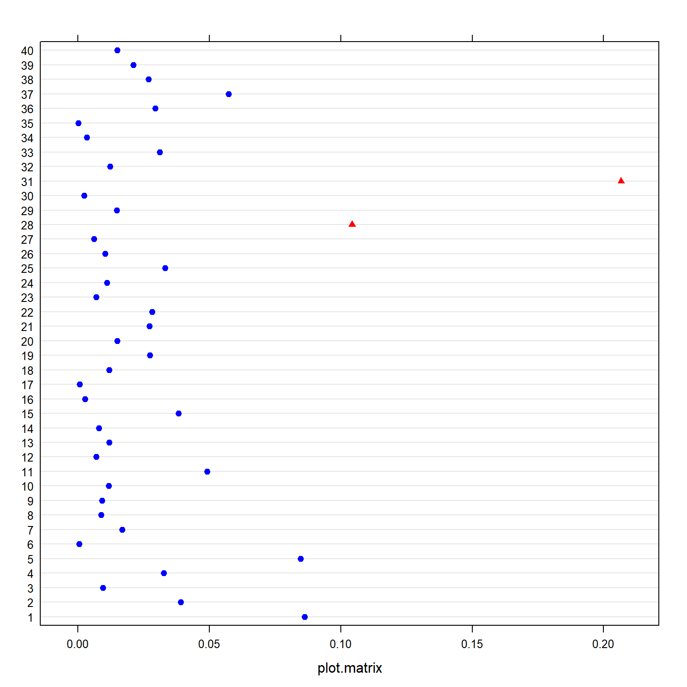
plot(my_infl_diag, which = "dfbetas", cutoff = dfbetas_cutoff)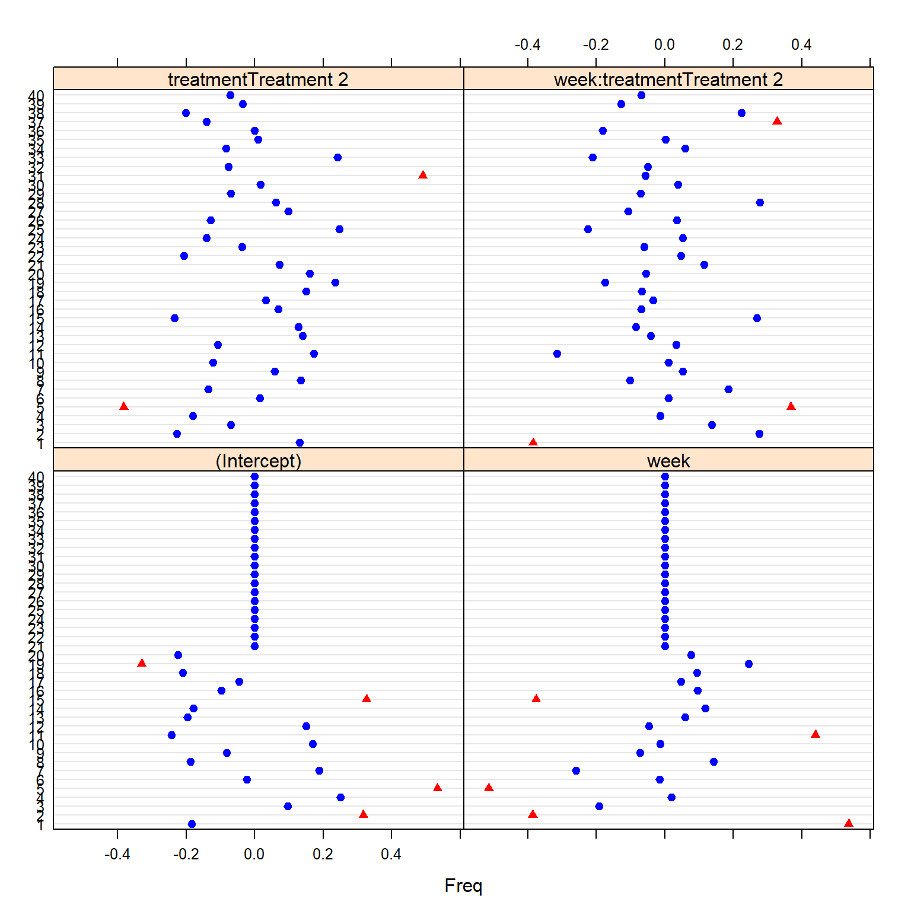
Based on the influence diagnostics, I’d take a closer look at observations 1, 5, and 31 as potential outliers. 31 has elevated Cook’s distance, while 1 and 5 have an increased influence on our intercept estimate as well as week and week:treatment estimates.
In a real data analysis I would rather drop cases one by one while also observing the model AIC to confirm that our model benefits from dropping these observations. For the purposes of this exercise, however, let’s just drop all of these observations at once:
(Also, given the small sample size, I wouldn’t propably drop any observations beyond 31. But let’s play along, here..)
#Print out the results of the F-test
bprs_minus_outliers <- filter(bprs_long, !(subject %in% c(1,5,31)))
my_lmm_v2 <- lmer(bprs ~ week + treatment + week * treatment + (week | subject), data = bprs_minus_outliers, REML = TRUE)
#Let's take a look, if the diagnostics improved
plot(resid(my_lmm_v2),bprs_minus_outliers$treatment)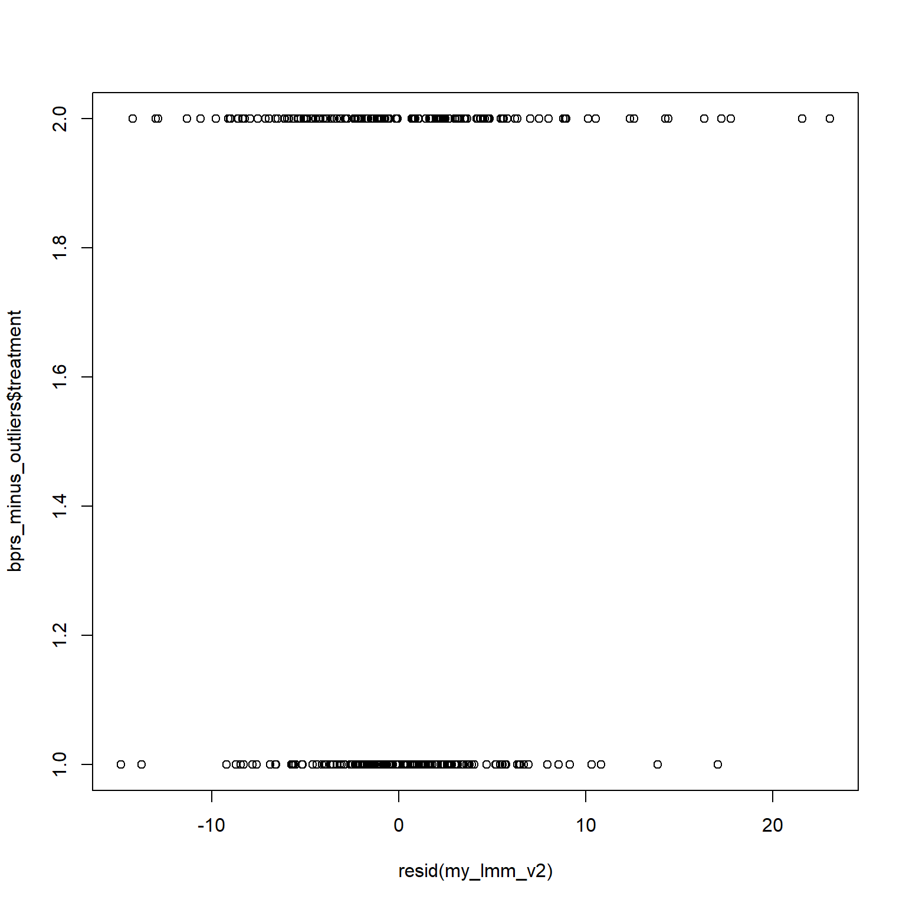
plot(resid(my_lmm_v2),bprs_minus_outliers$week)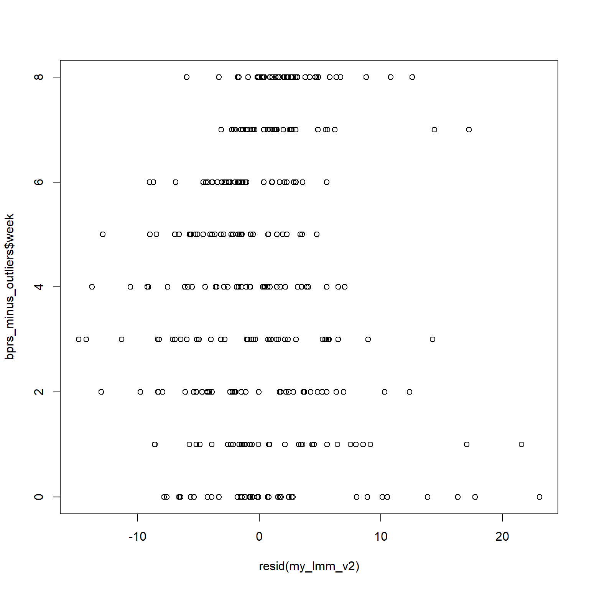
plot(my_lmm_v2)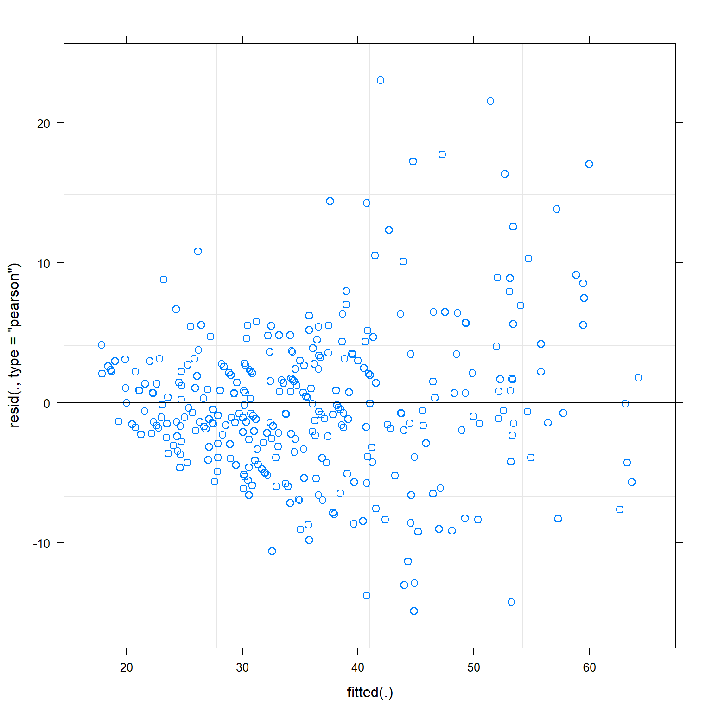
qqnorm(resid(my_lmm_v2))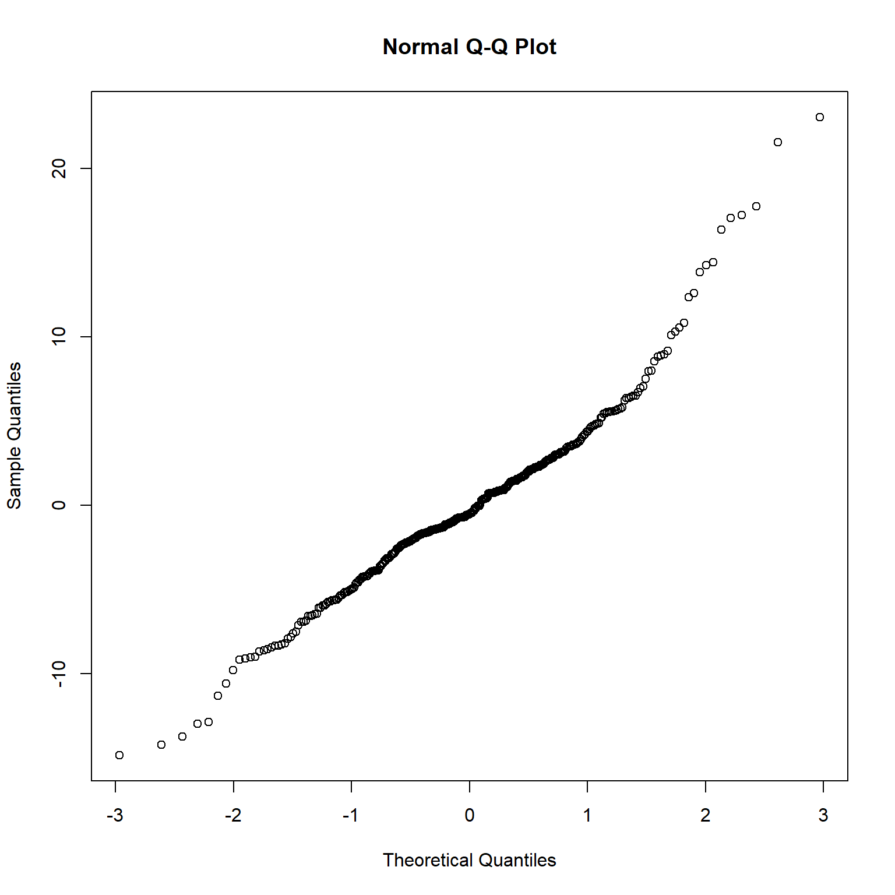
my_infl_diag <- influence(my_lmm_v2,group ="subject")
#Dfbetas cut-off for influencial observation is +-2/sqrt(n)
dfbetas_cutoff <- 2 / sqrt(nrow(bprs_wide)-3)
#We'll use the "4/n" -rule as a visual cutoff for Cook's distance:
cooks_d_cutoff <- 4 / (nrow(bprs_wide)-3)
#Produce the influence plots
plot(my_infl_diag, which = "cook", cutoff = cooks_d_cutoff)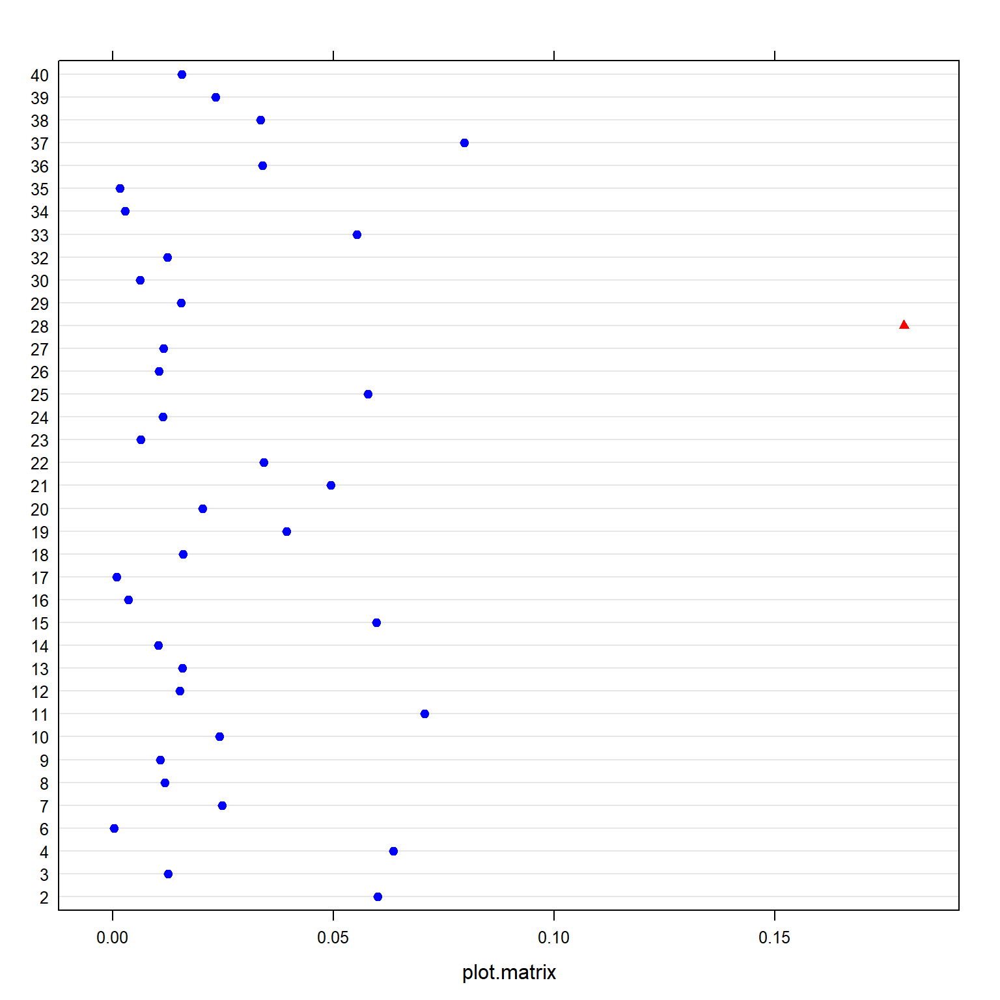
plot(my_infl_diag, which = "dfbetas", cutoff = dfbetas_cutoff)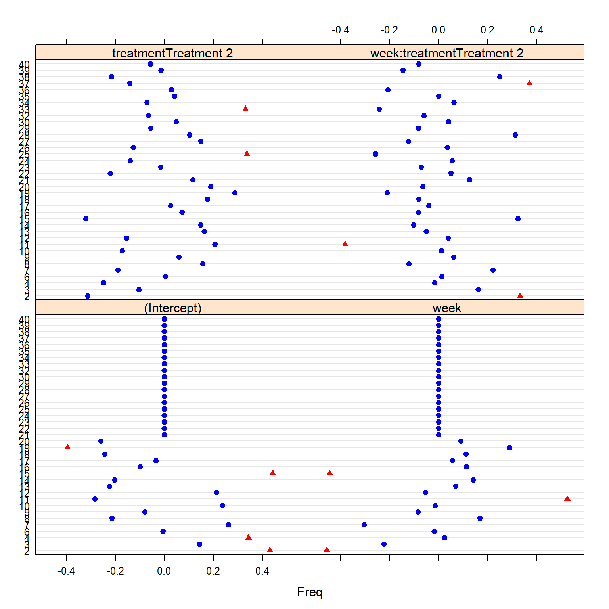
2.2.1 Interpretation
The model diagnostic plots showed no significant change. The influence diagnostics improved a little, perhaps, but no major improvement (excluding observations changed the model and therefore the potential outliers!).
We’ll make do with this model, however, for the purposes of getting on with things:
2.3 LMM Results
anova(my_lmm_v2, type = 2, ddf = "Kenward-Roger")## Type II Analysis of Variance Table with Kenward-Roger's method
## Sum Sq Mean Sq NumDF DenDF F value Pr(>F)
## week 2799.42 2799.42 1 35 77.4976 2.132e-10 ***
## treatment 25.53 25.53 1 35 0.7066 0.4063
## week:treatment 78.96 78.96 1 35 2.1858 0.1482
## ---
## Signif. codes: 0 '***' 0.001 '**' 0.01 '*' 0.05 '.' 0.1 ' ' 12.4 Interpretation of LMM results
Our visual observations on the data proved correct: there seems to be no statistically significant differences in etiher average bprs (p= 0.41) or the slopes of bprs over time (p = 0.15) between the two treatment groups. As we hypothesized, in the whole study population there was a statistically significant change in the average bprs over the course of the study period (p < 0.001).
2.4.1 A final plots to visualize the results
#Let's visualize the mean slope of bprs improvement for either group as estimated by LMM
time_points <- pull(unique(bprs_minus_outliers[3]), week)
emmip(my_lmm_v2, treatment ~ week, at = list(week = time_points))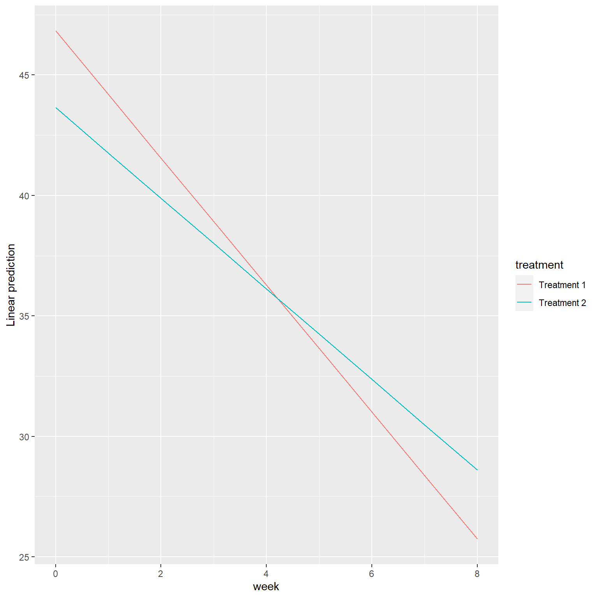
#A final plot of the estimated overall linear reduction in bprs for both groups
emmip(my_lmm_v2, ~ week, at = list(week = time_points))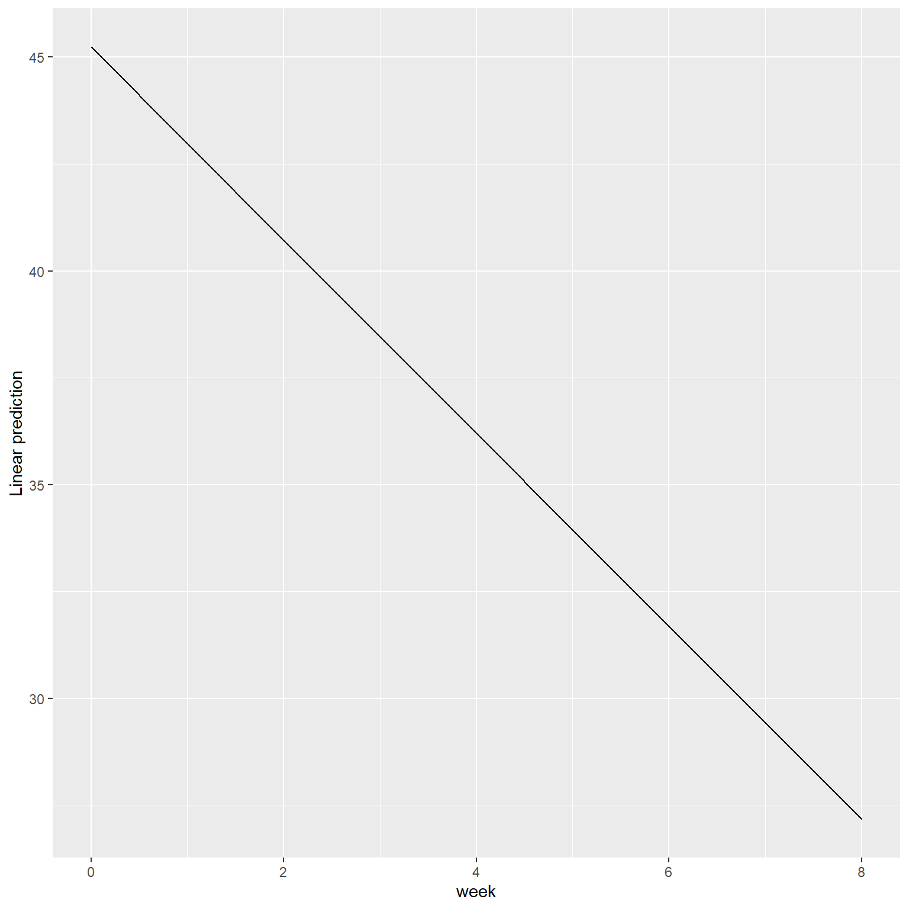
These graphs should be self explanatory
Thank you, for your attention!